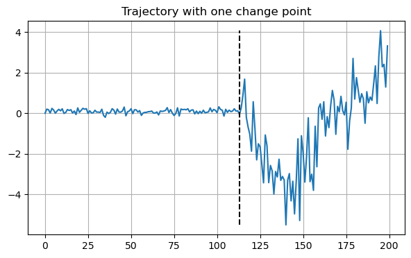
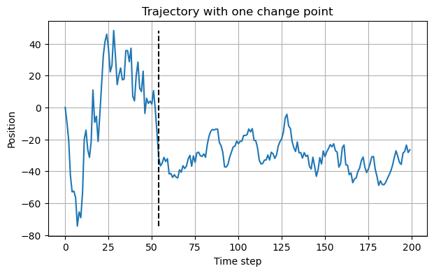
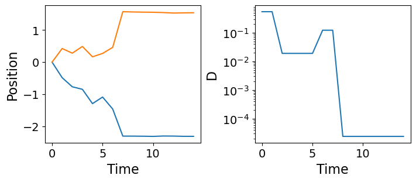

ROOT = Path(os.path.dirname(os.path.abspath('../')))
DATA_PATH = ROOT/"data/"
DATA_PATH.mkdir(exist_ok=True, parents=True)
FIG_PATH = DATA_PATH/"figures"
FIG_PATH.mkdir(exist_ok=True, parents=True)
MODEL_PATH = ROOT/"models"
MODEL_PATH.mkdir(exist_ok=True, parents=True)
MODEL_DATA = {
0: {'name': 'attm', 'exps': (0.05, 1.)},
1: {'name': 'ctrw', 'exps': (0.05, 1.)},
2: {'name': 'fbm', 'exps': (0.05, 1.95)},
3: {'name': 'lw', 'exps': (1.05, 2.)},
4: {'name': 'sbm', 'exps': (0.05, 2.)}
}
DEFAULT_TOKEN = -1Data
Data generation and data loading methods for anomalous diffusion segmentation.
Data info
We provide a set of variables with default information about the nature of the data and the default path to save it.
By default, we keep the root of the repository in ROOT, from which we define DATA_PATH=ROOT/'data' and MODEL_PATH=ROOT/'models', subsequently, we define FIG_PATH=DATA_PATH/'figures'. We use these as default paths to save and load the data, the trained models and the output figures.
Then, MODEL_DATA is a dictionary containing the information about the different anomalous diffusion models that we consider. And DEFAULT_TOKEN=-1 is the default value for the beginning of sequence token.
Data generation
To train our models, we make extensive use of simulated trajectories. The goal is to simulate realistic conditions in experiments to help our models generalize well in experimental applications.
We follow two main approaches to simulate our data depending on whether we’re working with anomalous diffusion or Brownian motion (normal diffusion).
However, the main framework is common for both. To generate trajectories with changes in diffusive behaviour, we simulate as many full trajectories as different segments we wish to have. Then, we take a sample segment of each and combine them together to obtain the resulting heterogeneous trajectory.
combine_trajectories
combine_trajectories (datasets, dim, margin=10, random_lengths=False)
Combine the trajectories in datasets to create heterogeneous trajectories by assigning random changepoints in between.
We use pandas dataframes to store our data.
trajs2df
trajs2df (trajectories, labels, change_points, dim, noise=None)
Stores all the trajectory information in a pandas.DataFrame.
Every row contains the information corresponding to a trajectory:
dim: dimension of the trajecotry (1D, 2D, 3D, …) (int).len: trajectory length (int).n_cp: number of changepoints (int).cp: changepoint positions (torch.tensor).models: anomalous diffusion model of each segment (torch.tensor).exps: anomalous diffusion exponent of each segment (torch.tensor).x: trajectory (torch.tensor).y: models and exps for every time step (torch.tensor).y_mod: anomalous diffusion model for every time step (torch.tensor).y_exp: anomalous diffusion exponent for every time step (torch.tensor).
Anomalous diffusion segmentation dataset
We simulate anomalous diffusion trajectories following a similar recipe to the proposed in andi_datasets for the AnDi challenge.
As we specify in MODEL_DATA, there are five anomalous diffusion models that we consider, each with a different range of anomalous diffusion exponent \(\alpha\):
- Annealed transit time (ATTM) with \(\alpha\in\left[0.05, 1\right]\).
- Continuous time random walk (CTRW) with \(\alpha\in\left[0.05, 1\right]\).
- Fractional Brownian motion (FBM) with \(\alpha\in\left[0.05, 1.95\right]\).
- Lévy Walk (LW) with \(\alpha\in\left[1.05, 2\right]\).
- Scaled Brownian motion (SBM) with \(\alpha\in\left[0.05, 2\right]\).
We take \(\alpha\) values in intervals of 0.05 within the specified ranges.
Furthermore, we add localization noise in the form of white noise \(\sim\mathcal{N}(0, \sigma_{\text{noise}})\). We also show how to build a data augmentation scheme with localization noise, for which having noiseless trajectories is useful. Simply, specify noise=[0] for that.
add_localization_noise
add_localization_noise (trajs, noise_amplitude=[0.01, 0.5, 1])
Adds white noise with standard deviation noise_amplitude.
create_andi_trajectories
create_andi_trajectories (n_traj, max_t, dim, exponents, models, noise=[0.1, 0.5, 1.0])
Creates anomalous diffusion trajectories.
For instance, we can generate a bunch of 2D FBM and SBM trajectories of 20 time steps and two levels of noise \(\sigma_{\text{noise}}=\left\{0.1, 0.5\right\}\). Furthermore, we can specify the desired values for \(\alpha\). Since both models can have a wide range of values, let’s make them purely super-diffusive \(\alpha>1\).
n_traj = 60
max_t = 20
dim = 2
exponents = np.arange(1.2, 2., 0.05)
models = [2, 4] # FBM and SBM
noise = [0.1, 0.5]
trajectories = create_andi_trajectories(n_traj, max_t, dim, exponents, models, noise=noise)The function create_andi_trajectories tries to balance the classes for diffusion model and \(\alpha\). Usually, this results into little deviations from the specified number of trajectories. Sorry for the inconvenience!
Code
print(f"We asked for {n_traj} trajectories and got {trajectories.shape[0]}")We asked for 60 trajectories and got 62As this uses andi_datasets.datasets_theory to generate the trajectories, the result is an \(N\times(2+d*T)\) matrix, where \(N\) is the number of trajectories, \(d\) is the dimension, and \(T\) is the trajectory length. The first two columns contain the trajectory information: model and \(\alpha\).
trajectories.shape(62, 42)trajectories[:6, :2]array([[2. , 1.2 ],
[2. , 1.2 ],
[2. , 1.25],
[2. , 1.25],
[2. , 1.3 ],
[2. , 1.3 ]])However, this method is limited to exclusively generate trajectories without changes along the way. As we mention above, we use it as a building block to generate our heterogeneous trajectories.
get_andids_fname
get_andids_fname (n_change_points, max_t, dim, name='')
Returns standardized file name for segmentation dataset.
create_andi_segmentation_dataset
create_andi_segmentation_dataset (n_traj:int, max_t:int=200, dim:int=1, n_change_points:int=1, models:list=[0, 1, 2, 3, 4], exponents:numpy.ndarray|None=None, noise:list=[0.1, 0.5, 1.0], path:pathlib.Path|str|None=None, save:bool=True, name:str='', margin=10, random_lengths=False)
Creates a dataset for trajectory segmentation of anomalous diffusion.
| Type | Default | Details | |
|---|---|---|---|
| n_traj | int | Number of trajectories | |
| max_t | int | 200 | Maximum trajectory length |
| dim | int | 1 | Trajectory dimension |
| n_change_points | int | 1 | Number of changepoints in the trajectories |
| models | list | [0, 1, 2, 3, 4] | Diffusion models to consider |
| exponents | numpy.ndarray | None | None | Anomalous exponents to consider. Defaults to full range |
| noise | list | [0.1, 0.5, 1.0] | Noise standard deviation |
| path | pathlib.Path | str | None | None | Path to save the data |
| save | bool | True | Save or not the data |
| name | str | Optional name for the data set | |
| margin | int | 10 | |
| random_lengths | bool | False | |
| Returns | DataFrame |
Let’s create a segmentation dataset of a few trajectories.
n_traj = 100
df = create_andi_segmentation_dataset(n_traj, save=False)The resulting DataFrame contains trajectories with one change point (by default), and combines all possible diffusion models and anomalous diffusion exponents.
df.columnsIndex(['dim', 'len', 'n_cp', 'cp', 'models', 'exps', 'x', 'y', 'y_mod',
'y_exp', 'noise'],
dtype='object')Let’s look at an example.
x0 = df.loc[0]
x0.exps, x0.models, x0.cp(tensor([0.2500, 0.2500]), tensor([1, 2]), tensor([113]))This trajectory changes from CTRW with \(\alpha=0.25\) to FBM with \(\alpha=0.25\) at frame 113.
Code
plt.figure(figsize=(7,4))
plt.plot(x0.x[0])
plt.vlines(x0.cp.item(), min(x0.x[0]), max(x0.x[0]), linestyles='dashed', colors='k')
plt.grid()
plt.title("Trajectory with one change point")
plt.xlabel("Time step")
plt.ylabel("Position");
Brownian motion
We simulate Brownian motion taking the displacements as white noise with standard deviation \(\sqrt{2D\delta t}\), where \(D\) is the diffusion coefficient and \(\delta t\) is the time-step duration (we generally take \(\delta t=1\)).
brownian_motion
brownian_motion (n_traj, max_t, D, dim=1, dt=1)
Simulate Brownian motion trajectories.
create_bm_trajectories
create_bm_trajectories (n_traj, max_t, Ds=[1.0], shuffle=True, dim=1, dt=1)
Simulate Brownian motion trajectories with various diffusion coefficients.
Similar to create_andi_trajectories, create_bm_trajectories evenly distributes the amount of trajectories for each diffusion coefficient we consider.
n_traj = 9
max_t = 5
trajectories = create_bm_trajectories(n_traj, max_t, dim=1, Ds=[1., 2.], shuffle=False)
trajectories.shape(8, 7)Despite only having one parameter: the diffusion coefficient \(D\), we still find two additional terms in the trajectory length which are, simply, two copies of \(D\). This is to keep a consistent formatting with the anomalous diffusion trajectories that need to store the model and \(\alpha\).
get_bmds_fname
get_bmds_fname (n_change_points, max_t, dim, name='')
Returns consistent file name for segmentation dataset.
create_bm_segmentation_dataset
create_bm_segmentation_dataset (n_traj:int, max_t:int=200, dim:int=1, n_change_points:int=1, Ds:collections.abc.Iterable|None=None, path:pathlib.Path|str|None=None, save:bool=True, name:str='', margin=10, random_lengths=False)
Creates a segmentation dataset to tell between diffusion coefficients.
| Type | Default | Details | |
|---|---|---|---|
| n_traj | int | Number of trajectories | |
| max_t | int | 200 | Maximum trajectory length |
| dim | int | 1 | Trajectory dimension |
| n_change_points | int | 1 | Number of changepoints in the trajectories |
| Ds | collections.abc.Iterable | None | None | Diffusion coefficients to consider defaults to logspace(-3, 3) |
| path | pathlib.Path | str | None | None | Path to save the data |
| save | bool | True | Save or not the data |
| name | str | Optional name for the data set | |
| margin | int | 10 | |
| random_lengths | bool | False | |
| Returns | DataFrame |
The behaviour is very similar to create_andi_segmentation_dataset. Let’s see an example.
N = 100
df = create_bm_segmentation_dataset(N, Ds=[10, 50, 100], save=False)x0 = df.iloc[1]
x0.exps, x0.cp(tensor([100., 10.]), tensor([54]))The trajectory changes from \(D=100\) to \(D=10\) at the 54th time-step.
Code
plt.figure(figsize=(7,4))
plt.plot(x0.x[0])
plt.vlines(x0.cp.item(), min(x0.x[0]), max(x0.x[0]), linestyles='dashed', colors='k')
plt.grid()
plt.title("Trajectory with one change point")
plt.xlabel("Time step")
plt.ylabel("Position");
ATTM trajectories
Annealed transit time (ATTM) is an anomalous diffusion model consisting of piecewise normal diffusion. Every segment has a random diffusion coefficient \(D\) drawn with probability \[P(D) = \frac{D^{\sigma - 1}\exp(-D/b)}{b^\sigma\Gamma(\sigma)}\,,\] with parameters \(\sigma\) and \(b\). The residence time in each diffusive state, \(\tau\), depends on the magnitude of the diffusion coefficient: \[P_\tau(\tau|D)=\frac{D^\gamma}{k}\exp(-\tau D^\gamma/k)\,,\] with parameters \(\gamma\) and \(k\). The parameters \(\sigma\) and \(\gamma\) in these distributions determine the anomalous exponent \(\alpha=\sigma/\gamma\), whenever \(\sigma<\gamma<\sigma+1\). Thus, for every \(\alpha\) there are infinitely many valid combinations of \(\sigma, \,\gamma\).
In andi_datasets, these parameters are randomly sampled given a fixed \(\alpha\). Here, we wish to extract \(\sigma\) and \(\gamma\) and, thus, we need a consistent way to simulate ATTM trajectories with those parameters fixed.
Note
In our work, we use ATTM trajectories to show how to characterize anomalous diffusion directly from changes in normal diffusion.
create_fixed_attm_trajs
create_fixed_attm_trajs (n_traj, max_t, sigma, gamma)
Creates 2-D ATTM trajectories with fixed sigma and gamma.
Let’s generate some ATTM trajectories with fixed \(\sigma=0.3\) and \(\gamma=0.4\), meaning that \(\alpha=0.75\).
n_traj = 2
max_t = 15
sigma, gamma = 0.3, 0.4
trajs, ds = create_fixed_attm_trajs(n_traj, max_t, sigma, gamma)Code
fig, axes = plt.subplots(nrows=1, ncols=2, figsize=(7, 3), constrained_layout=True)
axes[0].plot(trajs[0].T)
axes[0].set_xlabel("Time", fontsize=16)
axes[0].set_ylabel("Position", fontsize=16)
axes[0].tick_params(labelsize=14)
axes[1].semilogy(ds[0])
axes[1].set_xlabel("Time", fontsize=16)
axes[1].set_ylabel("D", fontsize=16)
axes[1].tick_params(labelsize=14)
Datasets with variable number of change points
So far we have shown how to build data sets with a fixed number of changepoints. In order to make a dataset that contains a variable number of change points, we can simply combine several of those in a smart way.
This will make our models much more robust and allow us to generalize better to experimental data with an arbitrary number of changes along the trajectories.
combine_datasets
combine_datasets (datasets, shuffle=True)
Combines data sets together.
Example: Brownian motion
With this code, we have generated the main test set of Brownian motion trajectories to validate our models.
N_per_set = 12000
max_t = 200
dim = 2
Ds = np.logspace(-3, 3, 1000)
cps = [1, 2, 3, 4]
# Choose a function to create datasets either brownian motion or anomalous diffusion
ds_fun = partial(create_bm_segmentation_dataset,
max_t=max_t, dim=dim, Ds=Ds, save=False)datasets = [ds_fun(N_per_set, n_change_points=n_cp) for n_cp in cps]
dataset = combine_datasets(datasets)
save_path = DATA_PATH/get_bmds_fname(f'{min(cps)}_to_{max(cps)}', max_t, dim, 'test')
dataset.to_pickle(save_path)Example: anomalous diffusion
With this code, we have generated the main test set of anomalous diffusion trajectories to validate our models.
N_per_set = 12500
max_t = 200
dim = 2
cps = [1, 2, 3, 4]
# Choose a function to create datasets either brownian motion or anomalous diffusion
ds_fun = partial(create_andi_segmentation_dataset,
models=models, max_t=max_t, dim=dim, noise=[0.], save=False)datasets = [ds_fun(N_per_set, n_change_points=n_cp) for n_cp in cps]
dataset = combine_datasets(datasets)
save_path = DATA_PATH/get_andids_fname(f'{min(cps)}_to_{max(cps)}', max_t, dim, 'test')
dataset.to_pickle(save_path)Validation with AnDi
It is useful to validate our models over the AnDi challenge data sets to compare them with the top performing models of the challenge.
By default, we asume the data is in DATA_PATH/andi_val_{task_number}.
load_andi_data
load_andi_data (dim=1, task=1, path=None)
Loads data from AnDi.
df = load_andi_data(dim=2)
df.shape(10000, 4)df.head(2)| dim | len | x | y | |
|---|---|---|---|---|
| 0 | 2 | 200 | [[tensor(0.), tensor(-0.5156), tensor(-0.8383), tensor(-1.4615), tensor(-1.7552), tensor(-1.6362), tensor(-1.4192), tensor(-1.3548), tensor(-1.2144), tensor(-1.7406), tensor(-1.6199), tensor(-1.4474), tensor(-0.2902), tensor(0.5447), tensor(0.5666), tensor(0.1618), tensor(-0.1004), tensor(-0.1377), tensor(-1.1998), tensor(-1.9200), tensor(-3.1992), tensor(-4.4678), tensor(-5.7045), tensor(-6.3007), tensor(-6.6895), tensor(-7.5415), tensor(-7.9907), tensor(-9.3120), tensor(-10.1935), tensor(-10.5246), tensor(-11.5122), tensor(-12.5124), tensor(-13.6076), tensor(-13.9701), tensor(-14.3846), ... | [] |
| 1 | 2 | 200 | [[tensor(0.), tensor(1.8434), tensor(2.5901), tensor(3.3360), tensor(3.3675), tensor(5.1754), tensor(6.7046), tensor(6.5266), tensor(5.5823), tensor(4.2652), tensor(2.6675), tensor(2.0960), tensor(1.3606), tensor(-0.0349), tensor(-1.4965), tensor(-0.4068), tensor(-1.8796), tensor(-1.7324), tensor(-1.8430), tensor(-0.4918), tensor(0.8988), tensor(1.1704), tensor(2.8995), tensor(3.4126), tensor(3.3071), tensor(4.3777), tensor(4.9901), tensor(6.3406), tensor(7.1728), tensor(8.1412), tensor(9.1267), tensor(9.0713), tensor(9.1243), tensor(11.2437), tensor(12.1926), tensor(12.3969), tensor(12.98... | [] |
DataLoaders
Data loaders are essential to train our machine learning models. We provide functions that load the data and return appropiate fastai.DataLoaders for the segmentation tasks.
load_dataset
load_dataset (n_change=1, max_t=200, dim=1, name='', path=None, bm=False)
Loads dataset according to n_change, max_t and dim or straight from path.
get_segmentation_dls
get_segmentation_dls (target:str='y_mod', models:list|None=None, exps:collections.abc.Iterable|None=None, size:int|None=None, bs:int=128, split_pct:float=0.2, shuffle:bool=True, tfm_y:collections.abc.Callable|None=None, n_change:int|str=1, bm:bool=False, max_t=200, dim=1, name='', path=None)
Obtain DataLoaders from dataset filtered by models and exps to predict target.
| Type | Default | Details | |
|---|---|---|---|
| target | str | y_mod | Task target y_mod, y_exp or y for both. |
| models | list | None | None | List of models to consider. Defaults to all. |
| exps | collections.abc.Iterable | None | None | List of anomalous exponents to consider. Deafults to all. |
| size | int | None | None | Maximum data set size. Defaults to full data set. |
| bs | int | 128 | Batch size. |
| split_pct | float | 0.2 | Validation set split percentage from training data. |
| shuffle | bool | True | Shuffle the dataset. |
| tfm_y | collections.abc.Callable | None | None | Transformation to apply to the target, e.g., torch.log10. |
| n_change | int | str | 1 | Number of changes in the trajectories, e.g., ‘1_to_4’. |
| bm | bool | False | Is it Brownian motion (False for anomalous diffusion) |
| max_t | int | 200 | |
| dim | int | 1 | |
| name | str | ||
| path | NoneType | None | |
| Returns | DataLoaders |
This is the main function to obtain DataLoaders for a segmentation task. These provide the trajetories with their corresponding labels at every time step.
Let’s see an example for a classification task (setting target='y_mod'). We take a sub-sample of the dataset of size=100 with a batch size bs=4.
seg_dls = get_segmentation_dls(size=100, bs=4)
x, y = seg_dls.one_batch()
x.shape, y.shape(torch.Size([4, 200, 1]), torch.Size([4, 200]))In this example, we have 1-dimensional trajectories with 200 time steps. Thus, the target is also 200 frames long.
x[0, :5], y[0, :5](tensor([[0.0000],
[3.3110],
[4.2102],
[7.4056],
[4.6176]]),
tensor([3, 3, 3, 3, 3]))SegmentationTransform
SegmentationTransform (target='y_mod', n_class=5, init_token=None)
Delegates (__call__,decode,setup) to (encodes,decodes,setups) if split_idx matches
get_transformer_dls
get_transformer_dls (target='y_mod', dim=1, n_change=1, max_t=200, valid_pct=0.2, models=None, exps=None, size=None, data_path=None, init_token=None, bs:int=64, shuffle_train:bool=None, shuffle:bool=True, val_shuffle:bool=False, n:int=None, path:str|Path='.', dl_type:TfmdDL=None, dl_kwargs:list=None, device:torch.device=None, drop_last:bool=None, val_bs:int=None)
Obtain DataLoaders from filtered dataset prepared for transformer training.
| Type | Default | Details | |
|---|---|---|---|
| target | str | y_mod | |
| dim | int | 1 | |
| n_change | int | 1 | |
| max_t | int | 200 | |
| valid_pct | float | 0.2 | |
| models | NoneType | None | |
| exps | NoneType | None | |
| size | NoneType | None | |
| data_path | NoneType | None | |
| init_token | NoneType | None | |
| bs | int | 64 | Batch size |
| shuffle_train | bool | None | (Deprecated, use shuffle) Shuffle training DataLoader |
| shuffle | bool | True | Shuffle training DataLoader |
| val_shuffle | bool | False | Shuffle validation DataLoader |
| n | int | None | Size of Datasets used to create DataLoader |
| path | str | Path | . | Path to put in DataLoaders |
| dl_type | TfmdDL | None | Type of DataLoader |
| dl_kwargs | list | None | List of kwargs to pass to individual DataLoaders |
| device | torch.device | None | Device to put DataLoaders |
| drop_last | bool | None | Drop last incomplete batch, defaults to shuffle |
| val_bs | int | None | Validation batch size, defaults to bs |
Transformer data loaders provide three items: raw trajectory (src), one-hot encoding of labels (tgt) and the labels to compute the loss. These are mainly intended for pointwise classification tasks, such as inferring the anomalous diffusion model behind the simulation. Otherwise, the one-hot-encoding does not make much sense.
tfm_dls = get_transformer_dls(size=100, bs=4)x, y_one_hot, y = tfm_dls.one_batch()
x.shape, y_one_hot.shape, y.shape(torch.Size([4, 200, 1]), torch.Size([4, 200, 5]), torch.Size([4, 200]))idx = 0
x[idx, :5], y_one_hot[idx, :5], y[idx, :5](tensor([[ 0.0000],
[-0.0976],
[-0.0456],
[ 0.0426],
[ 0.0395]], device='cuda:0'),
tensor([[-1., -1., -1., -1., -1.],
[ 0., 0., 1., 0., 0.],
[ 0., 0., 1., 0., 0.],
[ 0., 0., 1., 0., 0.],
[ 0., 0., 1., 0., 0.]], device='cuda:0'),
tensor([2, 2, 2, 2, 2], device='cuda:0'))get_andi_valid_dls
get_andi_valid_dls (bs=128, pct=1, dim=1, task=1, path=None)
Obtain DataLoaders from AnDi challenge validation data.
When validating on the AnDi challenge data, in some cases, it may be convenient to work with DataLoaders instaed of DataFrames, which can be obtained through load_andi_data. These are mainly intended to test our models. Thus, notice that the split percentage for train/validation is set to 100% validation by default.
andi_dls = get_andi_valid_dls(dim=2)
x, y = andi_dls.valid.one_batch()
x.shape, y.shape(torch.Size([128, 200, 2]), torch.Size([128, 0]))x[0, :5]tensor([[ 0.0000, 0.0000],
[-0.5156, 0.5875],
[-0.8383, 0.5096],
[-1.4615, 0.5320],
[-1.7552, 0.4109]])